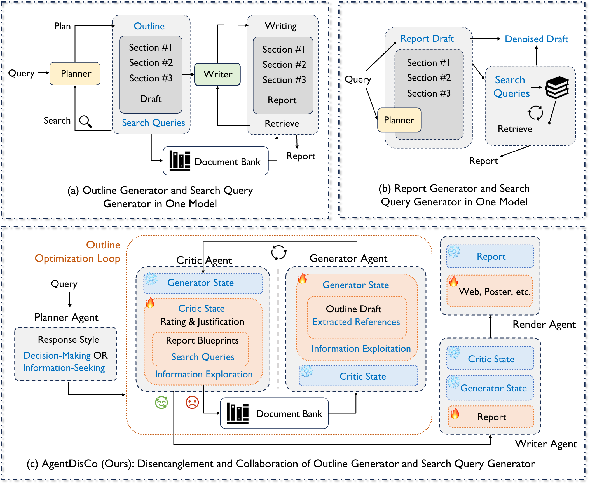

AgentDisCo
Towards Disentanglement and Collaboration
in Open-ended Deep Research Agents
Abstract
Open-ended deep research agents have emerged as a promising paradigm for autonomously performing comprehensive information gathering and synthesis. However, existing approaches typically integrate information exploration and exploitation into a single unified module—such as an outline generator or a report generator—thereby limiting their flexibility and optimization potential.
In this paper, we introduce AgentDisCo, a novel Disentangled and Collaborative agentic architecture that formulates deep research as an adversarial optimization problem between information exploration and exploitation. Specifically, a critic agent evaluates and critiques the generated outlines (information exploitation states) and subsequently refines the search queries (information exploration states), while a generator agent retrieves updated search results based on the refined queries and accordingly updates the generated outlines. The progressively refined outline is then delivered to a downstream report writer that synthesizes a comprehensive, coherent, and well-grounded research report.
The agentic workflow can be optimized through either handcrafted or automatically discovered design strategies by constructing a meta-optimization harness over the adversarial loop, where the generator agent is repurposed as a scoring agent that emits quality signals over the critic agent's outputs. Powerful code-generation agents—such as Claude-Code or Codex—systematically explore the space of agent configurations and automatically construct a policy bank: a structured repository of reusable and composable design strategies for search query generation across diverse research tasks and domains.
We evaluate AgentDisCo on three widely-adopted deep research benchmarks—DeepResearchBench, DeepConsult, and DeepResearchGym—with Gemini-2.5-Pro as the base model, demonstrating performance comparable to or surpassing leading closed-source deep research agents. To bridge the gap between academic benchmarks and real-world user needs, we further introduce GALA (General AI Life Assistants), a novel benchmark that automatically mines latent deep research interests from users' historical browsing behavior. Finally, we develop a rendering agent that transforms structured reports into visually rich rednote-style posters, and build the “AutoResearch Your Interest” product demonstration that delivers personalized deep research recommendations.
System Architecture
AgentDisCo is built around an outline optimization loop in which a cold, evaluative Critic Agent and a hot, generative Generator Agent communicate through structured blueprints. Each blueprint binds a planned narrative section to a list of targeted search queries, ensuring that retrieval at every iteration is systematically aligned with the intended scope of the final report.
- Planner Agent classifies the user query into a response style (decision-making vs. information-seeking) and configures the downstream loop.
- Critic Agent rates the current outline, identifies information gaps, and emits blueprints with section-level subqueries.
- Generator Agent retrieves updated evidence and revises the outline draft along with extracted references.
- Document Bank & Memory Bank sustain citation fidelity across turns and prevent citation drift.
- Writer Agent turns the converged outline into a long-form report with intent-driven hierarchical generation.
- Render Agent transforms the report into HTML, posters, slides and other multimodal deliverables.

GALA: General AI Life Assistants
Existing deep research benchmarks predominantly focus on academic or domain-specific consulting queries, which diverge from the breadth and diversity of real-world user needs. We introduce GALA — a benchmark constructed through an agentic workflow that automatically mines latent deep research interests from users' historical browsing behavior on the Xiaohongshu platform, enabling a more faithful reflection of organic, everyday information needs.
On top of GALA, we build “AutoResearch Your Interest”, an end-user demonstration that automatically curates personalized deep research recommendations from a user profile, runs them through AgentDisCo, and delivers the results as visually rich rednote-style posters.

Demonstrations
Each case below is an end-to-end recording of AgentDisCo: from the user query, through the critic–generator outline loop and long-form writing, to the final multimodal poster rendering produced by the Render Agent.
“2026年北京《非机动车管理条例》新规详解：蓝牌轻便摩托车 F 证考核要求、号牌十年有效期届满后的续期手续，以及非法改装判定的具体技术标准？”
A multi-faceted policy-interpretation query about Beijing's 2026 non-motorized vehicle regulations, covering F-license testing, license-plate renewal after the 10-year validity, and technical criteria for illegal modifications.
“2025 小红书发展报告”
An open-ended industry-report query — 2025 Xiaohongshu (rednote) Development Report — that requires broad evidence aggregation, structured outlining, and visually rich poster rendering.
Key Contributions
Disentangled Architecture
A critic / generator decomposition that turns deep research into adversarial optimization between information exploration and exploitation, mediated by structured blueprints.
Meta-Optimization Harness
A code-generation-driven harness (Claude-Code / Codex) that automatically explores agent configurations and assembles a reusable policy bank of design strategies.
GALA Benchmark
A new benchmark that mines latent deep research interests from real user browsing history, reflecting organic everyday information needs beyond academic queries.
Multimodal Renderer
A lightweight rendering agent that converts research reports into HTML, posters, and slides, powering the AutoResearch Your Interest product demo.
BibTeX
@article{jin2026agentdisco,
title = {AgentDisCo: Towards Disentanglement and Collaboration in Open-ended Deep Research Agents},
author = {Jin, Jiarui and Yan, Zexuan and Wang, Shijian and Jiao, Wenxiang and Lu, Yuan},
journal = {arXiv preprint},
year = {2026},
url = {https://agentdisco-project.github.io/}
}